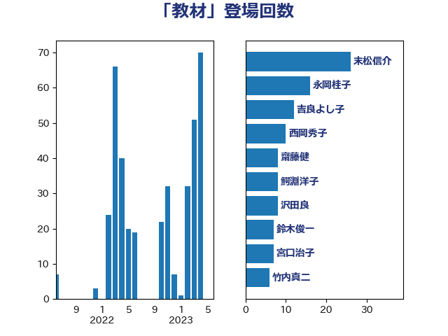

単語「教材」

| 末松信介 | 自由民主党 | 26 回 |
| 永岡桂子 | 自由民主党 | 16 回 |
| 吉良よし子 | 日本共産党 | 12 回 |
| 西岡秀子 | 国民民主党 | 10 回 |
| 齋藤健 | 自由民主党 | 8 回 |
| 鰐淵洋子 | 公明党 | 8 回 |
| 沢田良 | 日本維新の会 | 8 回 |
| 鈴木俊一 | 自由民主党 | 7 回 |
| 宮口治子 | 立憲民主党 | 7 回 |
| 竹内真二 | 公明党 | 6 回 |
| 柚木道義 | 立憲民主党 | 6 回 |
| 佐々木さやか | 公明党 | 6 回 |
| 金子恭之 | 自由民主党 | 4 回 |
| 葉梨康弘 | 自由民主党 | 4 回 |
| 若宮健嗣 | 自由民主党 | 4 回 |
| 大島九州男 | れいわ新選組 | 4 回 |
| 伊藤孝恵 | 国民民主党 | 4 回 |
| 仁木博文 | 無所属 | 4 回 |
| 簗和生 | 自由民主党 | 3 回 |
| 小倉將信 | 自由民主党 | 3 回 |
| 寺田稔 | 自由民主党 | 3 回 |
| 高見康裕 | 自由民主党 | 2 回 |
| 野田聖子 | 自由民主党 | 2 回 |
| 落合貴之 | 立憲民主党 | 2 回 |
| 菊田真紀子 | 立憲民主党 | 2 回 |
| 牧義夫 | 立憲民主党 | 2 回 |
| 漆間譲司 | 日本維新の会 | 2 回 |
| 岸田文雄 | 自由民主党 | 2 回 |
| 岬麻紀 | 日本維新の会 | 2 回 |
| 山崎正恭 | 公明党 | 2 回 |
| 安江伸夫 | 公明党 | 2 回 |
| 勝部賢志 | 立憲民主党 | 2 回 |
| 勝目康 | 自由民主党 | 2 回 |
| 伊藤孝江 | 公明党 | 2 回 |
| 今井絵理子 | 自由民主党 | 2 回 |
| 青山大人 | 立憲民主党 | 1 回 |
| 長妻昭 | 立憲民主党 | 1 回 |
| 長友慎治 | 国民民主党 | 1 回 |
| 鎌田さゆり | 立憲民主党 | 1 回 |
| 金城泰邦 | 公明党 | 1 回 |
| 野間健 | 立憲民主党 | 1 回 |
| 野村哲郎 | 自由民主党 | 1 回 |
| 道下大樹 | 立憲民主党 | 1 回 |
| 角田秀穂 | 公明党 | 1 回 |
| 西銘恒三郎 | 自由民主党 | 1 回 |
| 自見はなこ | 自由民主党 | 1 回 |
| 神谷宗幣 | 参政党 | 1 回 |
| 石井正弘 | 自由民主党 | 1 回 |
| 田嶋要 | 立憲民主党 | 1 回 |
| 湯原俊二 | 立憲民主党 | 1 回 |
| 清水真人 | 自由民主党 | 1 回 |
| 浮島智子 | 公明党 | 1 回 |
| 池田佳隆 | 自由民主党 | 1 回 |
| 林芳正 | 自由民主党 | 1 回 |
| 松本剛明 | 自由民主党 | 1 回 |
| 木村英子 | れいわ新選組 | 1 回 |
| 星北斗 | 自由民主党 | 1 回 |
| 斎藤嘉隆 | 立憲民主党 | 1 回 |
| 後藤茂之 | 自由民主党 | 1 回 |
| 川田龍平 | 立憲民主党 | 1 回 |
| 小西洋之 | 立憲民主党 | 1 回 |
| 小熊慎司 | 立憲民主党 | 1 回 |
| 小宮山泰子 | 立憲民主党 | 1 回 |
| 宮崎勝 | 公明党 | 1 回 |
| 大西健介 | 立憲民主党 | 1 回 |
| 大石あきこ | れいわ新選組 | 1 回 |
| 大家敏志 | 自由民主党 | 1 回 |
| 堀内詔子 | 自由民主党 | 1 回 |
| 城井崇 | 立憲民主党 | 1 回 |
| 土屋品子 | 自由民主党 | 1 回 |
| 国光あやの | 自由民主党 | 1 回 |
| 嘉田由紀子 | 無所属 | 1 回 |
| 古賀千景 | 立憲民主党 | 1 回 |
| 古川禎久 | 自由民主党 | 1 回 |
| 勝俣孝明 | 自由民主党 | 1 回 |
| 加田裕之 | 自由民主党 | 1 回 |
| 保岡宏武 | 自由民主党 | 1 回 |
| 今枝宗一郎 | 自由民主党 | 1 回 |
| おおつき紅葉 | 立憲民主党 | 1 回 |